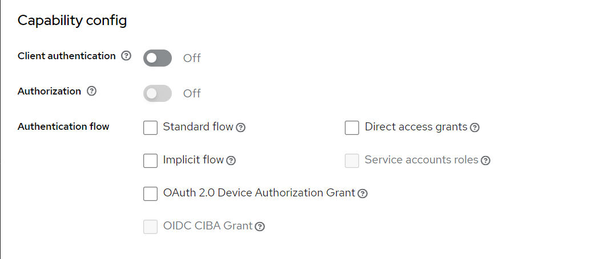
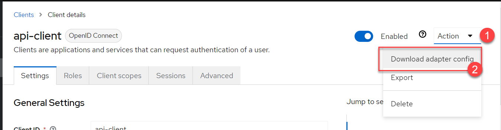
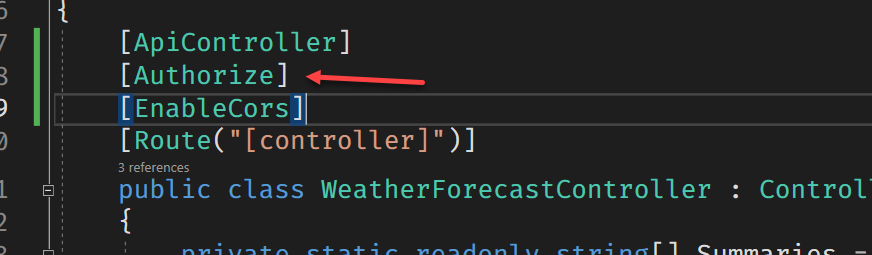
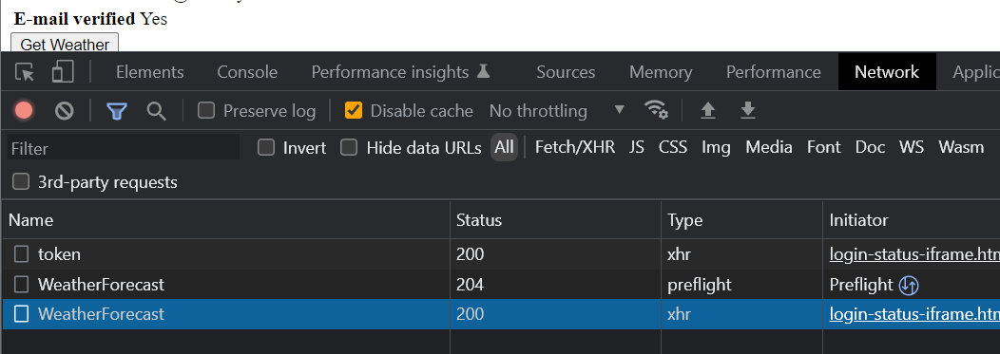
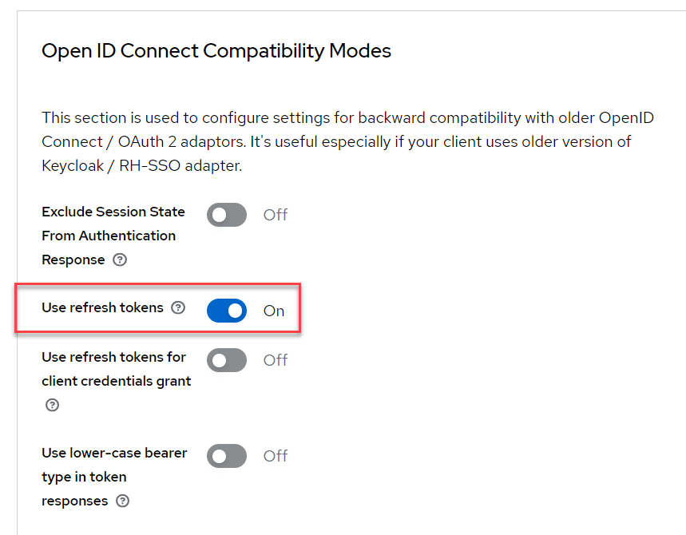

[Keycloak] WebAPI with Keycloak
上一篇介紹了基本環境設定與 Angular 前端如何套用 Keycloak，但一個完整的流程應該還會包含後端的 API 驗證，這篇會用 C# 的 WebAPI 來做一個簡單範例
New Keycloak Client
在 KeyCloak Admin Console 內多新增一個 Client 並把一些設定全部關掉，在最新版的介面裡面已經找不到設定 access type 的介面了，Google 一番後發現只要將所有的 Authentication flow 全部取消掉，就是以前的 Bearer-only 模式
所謂的 Bearer-only 模式: the application only allows bearer token requests

設定完成後可以到同一畫面的右上角取額 setting json 內容

將內容複製起來，等等建立在 Core WebAPI 專案的地方用的到
c# 專案
先新增一個 ASP.NET Core WebAPI 的專案，並安裝 Keycloak.AuthServices.Authentication 套件
將上個步驟的 adapter config 內容新增到 appsettings.json 檔內，這邊是示範，Production 使用時請依正確做法設定
1 | { |
回到 Program.cs 檔案內新增 Authentication 的設定
1 | builder.Services.AddKeycloakAuthentication(configuration, o => |
記得在 app.UseAuthorization() 的上方加入 app.UseAuthentication();
1 | app.UseAuthentication(); |
上述完成設定後，就可以到 API 的地方加上 [Authorize] 的標籤

一旦加上去後，只要要呼叫這個 API 時，就會檢查 request header 內的 authorization 的 Bearer 值是否合法正確
如果遇到 CORS 問題
如果從 angular application 呼叫 API 時，通常會撞上 CORS 的問題，這時候就得在 Program.cs 加上 Cors 的相關設定，減少大家 google 的時間，這邊就附上最不嚴謹的設定
1 | builder.Services.AddCors(options => |
Controller 的部分也需要加上 [EnableCors] 的標籤
實際呼叫的 Network 截圖

在 Web 的部分會多判斷處理 Token 過期的問題，如果後臺有設定可自動 Refresh，那麼在呼叫 API 時就會去做 Token 更新的動作，之後才會進行 API 呼叫 (with authorization: Bearer xxxxxx)
